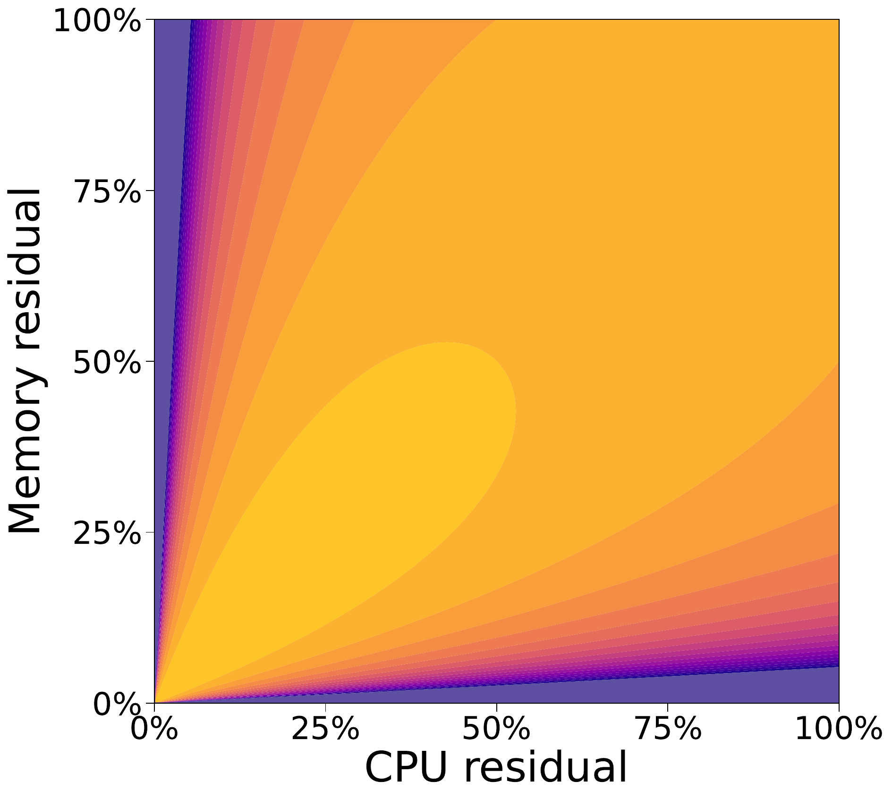

如果一个模型只能提出“看起来不错”的算法想法，它还不能称为科学发现系统。真正困难的是把想法写成可运行的程序，交给评价器验证，再让后续搜索利用分数和失败反馈继续改变程序。AlphaEvolve 把这件事做成了一个以代码为载体的演化闭环。
本文解读 Alexander Novikov、Ngân Vũ、Marvin Eisenberger 等人的 AlphaEvolve: A coding agent for scientific and algorithmic discovery（arXiv v1，2025-06-16）。这篇白皮书介绍 Google DeepMind 的通用演化式 coding agent：它通过 LLM 生成代码 diff、自动评价和程序数据库持续改进算法，并展示矩阵乘法、数学构造和 Google 计算基础设施中的案例。
一、课题解读：从代码生成到可验证的算法发现
传统 coding agent 通常接收一个需求，生成能运行的代码；科研与算法发现还要多走几步：候选程序必须满足硬约束，性能要能在真实或模拟环境中测量，改进要能在未见输入上复现，偶然的高分不能直接当成新知识。
这个领域研究的是如何把搜索、执行、验证和解释连接成一个长期循环。在可自动评分的问题里，程序可以同时是候选解、搜索策略和最终交付物。评价器把“是否正确”“是否更快”“是否更省资源”等目标转成数值反馈，模型再据此探索新的代码结构。
二、相关文献解读：从 FunSearch 到更大规模的代码演化
| 工作 | 主要做法 | AlphaEvolve 延伸之处 |
|---|---|---|
| 遗传编程与程序演化 | 预先设计 mutation/crossover 操作，迭代程序种群 | 由 LLM 根据上下文提出跨函数、跨组件的修改 |
| FunSearch | 用 LLM 演化一个 Python 函数，发现数学构造或启发式 | 演化整个代码文件，支持多语言、多目标和更长评测 |
| AlphaTensor 等专用系统 | 针对矩阵乘法等单一问题设计搜索 | 把“如何表示候选与如何评估”开放为任务配置 |
| AI 科研智能体 | 在自然语言层面生成、排序和讨论假设 | 以可执行程序为中间表示，用机器反馈压住幻觉 |
AlphaEvolve 的位置不是替代自然语言科研智能体，而是把高层想法落到可以执行的算法搜索阶段。它尤其适合数学、计算机科学和系统优化中能够写出可靠自动评价器的问题。
三、研究问题解读：这套系统想回答什么
下面是我们的阅读归纳，并非作者逐字列出的研究问题：
- 能否让 LLM 直接修改较大的代码库，而不被限制在一个短函数或固定语言中？
- 演化数据库、丰富上下文、元提示、多目标评分和强弱模型混合，分别是否真的有贡献？
- 同一套闭环能否同时处理数学构造、算法发现和工业计算栈优化？
- 什么样的自动评价器和验证流程，才能把候选程序的高分转化为可信的发现？
四、方法解读：一个以评价器为中心的异步演化闭环

第一步：把问题写成可评分的代码任务
用户需要提供初始程序、标记为可演化的代码块，以及一个 evaluate 函数。它接收生成的程序并返回一个标量字典，默认所有指标都要最大化。其余代码构成固定骨架，负责调用被演化部分和执行评测。
这种接口让任务表达具有弹性：可以直接演化候选对象，也可以演化从零构造对象的函数、固定预算内的搜索算法，甚至联合演化“中间解”和“专门寻找它的搜索器”。表示层级不同会带来不同偏置，例如构造函数可能更偏向对称解。
第二步：从程序数据库采样丰富提示
数据库保存程序、分数和执行输出。Prompt sampler 从中挑选多个已有方案，再加入问题说明、公式、代码片段、论文或日志等显式上下文。系统还支持随机模板、把 evaluation 结果渲染进提示，以及单独演化的 meta prompt。
相较只把上一个答案塞回上下文，这个设计让模型同时看到高分方案、不同结构和失败反馈，形成更大的“候选邻域”。
第三步：用模型集成提出代码 diff
AlphaEvolve 要求 LLM 用 SEARCH/REPLACE diff 修改当前程序，而不是返回一份无法对齐的完整新文件。论文中的实现混合 Gemini 2.0 Flash 与 Gemini 2.0 Pro：前者提高候选吞吐，后者偶尔提供更高质量、可能跨越局部最优的修改。
它可以演化数百行代码、多个函数和多种语言；但“能改”不等于“能过”，每个 diff 都必须进入下一步执行验证。
第四步：评价器级联、并行执行和多目标评分
生成的程序先经过快速、小规模测试，只有达到阈值才进入更困难的评测；这叫 evaluation cascade。评价器也可以返回多个分数，例如速度、质量、资源使用和稳定性，或调用另一个 LLM 对代码简洁性等难以形式化的属性打分。
当单次评测可能消耗约 100 个 compute-hours 时，系统把不同随机初始化或测试分片异步分发到评测集群。这里的关键是：搜索的速度由候选生成速度和评价吞吐共同决定，不是只看 LLM 每秒能写多少代码。
第五步：按进化算法把好程序重新放回数据库
有分数和执行结果的候选程序进入 evolutionary database。数据库负责重新暴露有潜力的程序，同时保留足够多样的历史方案，使搜索能够继续爬坡而不是永远复制当前冠军。整个系统以 asyncio 实现为异步 pipeline，候选生成、评测和数据库更新可以并行。
五、实验设计与结果：先看整体发现，再看组件贡献
主实验：数学、算法和 Google 计算栈中的整体结果
这篇白皮书不是单一 benchmark，而是一组真实问题的应用报告。作者使用自动评价器驱动 AlphaEvolve，比较发现的算法或启发式与已有最佳结果，并在部分工程任务上使用未见数据、真实硬件或人工审查做验证。
| 场景 | 任务与评价 | 主要结果 |
|---|---|---|
| 矩阵乘法 | 以张量分解的 rank（标量乘法次数）为目标，算法需保持精确 | 改进 14 个矩阵乘法目标；对任意特征 0 的 (4\times4) 复矩阵乘法发现 rank 48，优于递归 Strassen 的 49 |
| 数学构造 | 50 多个开放问题，用构造对象的数学性质自动评分 | 约 75% 追平已知最好构造，约 20% 超过 SOTA 并得到新的可证明更优构造 |
| Borg 调度 | 用历史工作负载模拟器评价 CPU/内存装箱启发式，并用近期未见数据测试 | 部署后平均回收 Google 全舰队约 0.7% 原本闲置的计算资源 |
| Gemini kernel | 在真实 TPU 输入形状上最小化矩阵乘法 kernel 运行时间 | kernel 平均提速 23%，Gemini 总训练时间减少 1%；优化从数月缩到数天 |
| TPU 电路 | 优化 Verilog RTL，同时通过功能验证并由 TPU 设计师审查 | 找到去除冗余位的简单重写，集成到下一代 TPU 设计流程 |
| 编译器生成 IR | 对 FlashAttention 的 XLA IR 及前后处理做随机输入数值验证 | kernel 提速 32%，输入/输出前后处理部分提速 15% |
矩阵乘法案例是最容易核验的算法发现：搜索不只调参数，而是提出了 15 次跨组件修改，最终得到 48 次标量乘法的 (4\times4) 复矩阵算法。数学构造案例表明系统能在多种问题上找到新对象，但“约 20% 超过 SOTA”是跨问题的汇总比例，不是每道题都严格独立证明，也不是自然科学实验的成功率。

工程案例提供了更接近生产的证据链。Borg 启发式先在历史快照模拟，再用未见近期工作负载测试，最后全舰队部署并观察到与模拟一致的 0.7% 资源回收。Gemini kernel 任务则将半数真实输入形状用于演化、半数用于评价，避免只在搜索见过的形状上得分。TPU 和 XLA 任务都把数值或功能正确性作为硬门槛；因此“快了多少”必须和“仍然正确”同时报告。

补充分析：哪些组件让搜索更有效
作者在矩阵乘法张量分解和 kissing-number 下界两个任务上做消融，比较：去掉演化、去掉提示中的显式上下文、去掉 meta-prompt evolution、只演化 loss function 而非完整文件，以及只使用单个小模型。图 8 的曲线是随 compute budget 增加的平均目标表现，阴影是三次不同随机种子的跨目标标准差。

论文的总体结论是每个组件都带来显著改善：演化数据库让后续代际看到并改进历史方案；显式上下文提供问题结构和反馈；meta prompt 帮助改进提示本身；全文件演化允许修改跨函数的协同逻辑；强模型提高候选质量。需要注意，这里的消融是两个代表性任务上的曲线比较，不是对所有工程案例的因果分解。
六、我们自己的思考
课题思考：这个领域在研究什么
AlphaEvolve 展示了一种很清晰的科研智能体分工：LLM 负责提出结构化变化，程序执行负责兑现或拒绝变化，数据库负责积累搜索记忆，评价器负责把“好坏”变成下一轮可用的信号。它把测试时计算从“生成更多文本”扩展成“运行更多有反馈的程序”。
其真正的突破点不只是使用更强的模型，而是把候选表示、自动评价和迭代预算组织成了一个可持续的发现环境。对于可计算的科学问题，可靠 evaluator 可能比更复杂的对话式规划更先决定系统的上限。
局限问题思考：目前还存在哪些问题
第一，系统依赖可自动化的评价器；很多自然科学实验仍无法用低成本、可重复的模拟器替代。第二，白皮书中的应用来自 Google 内部基础设施和精心选择的数学问题，资源、工程上下文和专家验证难以完全复现。第三，分数驱动的演化可能优化代理指标，尤其当多目标之间存在冲突或评价器不完整时。第四，AlphaEvolve 找到的是算法或启发式，如何从代码行为提炼可迁移的科学机制，论文没有系统回答。
解决方案思考：这些问题有哪些解决方向
针对第一点，可以让高层 LLM 先提出可检验的自然语言假设，再把其中可模拟的部分编译成 evaluator，并明确记录人工实验仍缺失的证据。针对第二点，应发布任务规格、初始程序、评价器、搜索预算和完整候选轨迹，用跨机构复现实验区分方法增益与基础设施优势。针对第三点，可以使用隐藏测试集、对抗性评价、多个独立 evaluator 和人工审查，报告“优化分数”和“真实目标”的差距。最后，可以让系统自动生成算法不变量、证明草稿和行为摘要，把高分代码转成研究者能够理解、复用和迁移的知识。
一句话总结： AlphaEvolve 的核心不是让 LLM 一次写出正确算法，而是让代码成为可突变的假设、评价器成为持续反馈，演化数据库成为长期记忆，从而把“生成—执行—筛选—再生成”推进到足以产生数学和工程改进的规模。
参考： arXiv 论文、HTML 全文、数学结果 Colab。